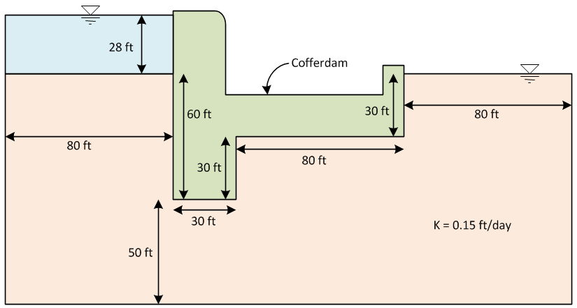
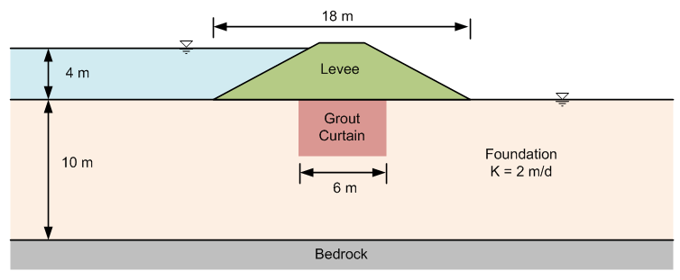
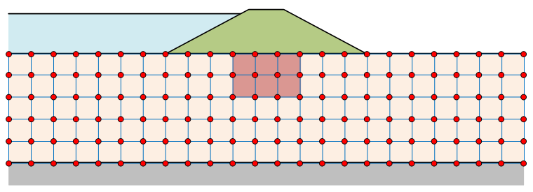

Homework - Finite Difference Model of Levee & Grout Curtain
a) Cofferdam Problem
Find a solution for flow beneath the copper dam shown below using the findiff-2 spreadsheet. Use a 10 ft x 10 ft grid cell spacing. Assume that the cofferdam is 260 ft long.

b) Grout Curtain Design
The objective of this exercise is to analyze the levee shown in the following figure. The levee is 300 m long in the transverse direction. The levee material is much less permeable than the foundation material so we will only model flow in the foundation. The depth of the grout curtain is not shown because we are going to analyze the grout curtain at various depths.

Build a finite difference model of the flow in the foundation using using the findiff-2 spreadsheet. Use a grid with 2 m spacing as shown below:

Use the spreadsheet to analyze the maximum hydraulic gradient and flow rate (total) under various grout curtain depths. Assume that the grout curtain is impemeable. Make a table showing the max gradient and total flow rate vs. depth of grout curtain where the depth varies in increments of 0, 2, 4, 6, and 8 m. Write a paragraph summarizing your observations from the exercise.
Put your table and summary in a word document. Save a copy of your spreadsheet with the 4 m deep grout curtain case.
Submission
Zip up all three documents (one spreadsheet from part (a) and a spreadsheet and a word document from part (b)) into a single zip archive. Upload your zip arvhive via Learning Suite.